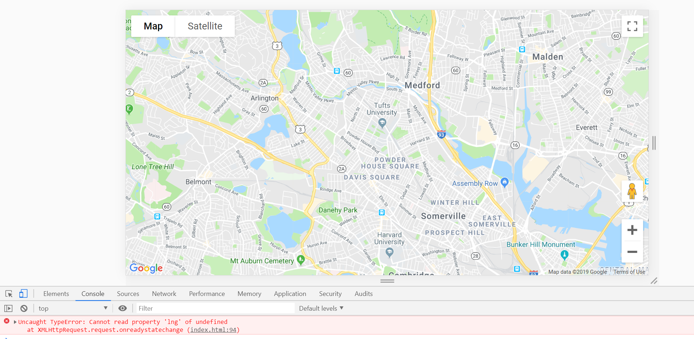

XSS in username post route
This is a high severity issue because it allows anyone to insert any script into the database which is then executed when the passenger.json get route is run. Although my script was just a simple alert, a malicious user could very easily insert a script that caused real damage. I found the issue by observing that there was no validation in the post route username field. This meant that I was able to insert anything as a username, including a script. The issue could be resolved by using a validator which would remove any special characters. First you'd have to require the npm validator package and then use: username = validator.escape(username);


Undefined error in console through lat/lng post route
This is a medium severity issue because it prevents the map from working (which is the whole point of the website), but it does not cause a malicious attack. I found the issue by not entering in lat and/or lng in the curl post route. This does not prevent the data from being stored in the database as it should (which is bad coding practice), and instead just stores in null. The code only checks to make sure that lat, lng, and username are not undefined, so it does not catch the null values. Then, when Google Maps tries to render the map, this null value is read as undefined and prevents the map from showing any icons, giving a console error (as seen below). This error could be corrected if instead of only checking to make sure lat, lng, and username are not undefined, also checking to make sure they are not null: if(username != undefined && username != null && lat != undefined && lat != null && lng != undefined && lng != null)
Database leakage in passenger.json
This is a high severity issue because it allows a user to see everyone's data rather than just their own. This database contains locational information which you would not want anyone who was not verified to get hold of, as they could use the data to track a user. In some database leaks of this sort, the issue could be even more severe if the database was storing highly sensitive data such as social security numbers. I discovered the issue by inserting [$ne] into the query string of passenger.json get route. This essentially shows all the passengers that are NOT the one username actually entered. In order to prevent against this, the key should also be checked, rather than just the value. This would prevent changing the key by adding [$ne] and having it still work. (Please note that the DIE NOW at the beginning of the screenshot is simply from the XSS vulnerability mentioned earlier and unrelated to this vulnerability.)